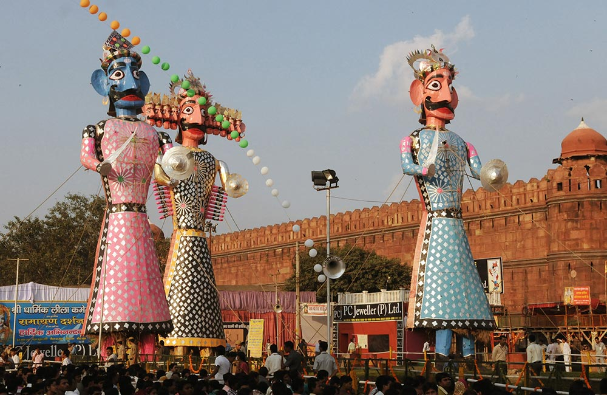

Festivals are larger than life celebrations of various things. They occur at regular intervals and helping in breaking the monotony of life. Furthermore, they give you the chance to celebrate the little and big things in life. Festivals are the carriers of peace and joy in the communities. All nations of the world have certain religious and cultural festivals. However, India is one of the largest countries to celebrate numerous festivals. As India is a very cultural and diverse country, so are the festivals. They divide into three general categories of national, religious and seasonal.

As we can divide the Indian festivals into national, religious and seasonal, we see how they differ from each other. In general, national festivals are celebrated in honor of reputable people and events. The religious ones follow legends of faiths and their beliefs. The seasonal ones are celebrated with each season that we experience that varies from region to region.
National FestivalsThe national Festivals are those days when something remarkable happened that changed the course of history for our country. These days, every public and private office celebrates and declares holidays for the employees. National festivals include Republic Day, Independence Day, Gandhi Jayanti and more. These festivals are celebrated all over India. All the citizens of the country celebrate them irrespective of the religion, caste, creed, and sex. Everyone celebrates them with great patriotism. These festivals are gazetted holidays all over the country and are enjoyed with great enthusiasm. |
|
Independence Day is celebrated on August 15, 1947. On this day, we received independence from the colonial rule of the British Empire. We celebrate and pay tribute to the revolutionaries who led their lives to make us free from the shackles of British tyranny. Republic Day is celebrated gallantly in New Delhi, our capital. Our defence forces join hands to perform tricks and showcase their power to the public. These Festivals are celebrated across the country. Moreover, they help in setting aside the differences of the countrymen and unite each other like never before. The capital of India, New Delhi is the seat of national festivals. For instance, it witnesses the grand parade of the Republic Day. The flag hoisting takes place in New Delhi, which is broadcasted on national television for the whole country to see. |
Religious FestivalsEvery Indian religious festival has a story behind it. These stories carry a message for all the common men. Most of the Festivals convey the message of peace and the victory of good over evil. Every family prepares delectable preparations and invites guests, relatives and other family members. Families reunite, people enjoy for a few days and then get back with their monotonous lives. They again wait for another year eagerly for the religious Festivals to arrive with the wish to see their loved ones again. The religious festivals are one of the most famous festivals not only throughout India but over the world. Some of the most prominent religious festivals are Diwali, Dussehra, Eid-Ul-Fitr, Christmas, Guru Nanak Jayanti, Holi and many more. Diwali and Holi are the most prominent festivals of the Hindu religion. They are very colorful and full of lights. Vijayadashami, also known as Dussehra, Dasara or Dashain, is a major Hindu festival celebrated at the end of Navaratri every year. It is marking the triumph of Rama, an avatar of Vishnu, over the 10-headed demon king Ravana, who abducted Rama's wife, Sita. The festival's name is derived from the Sanskrit words dasha (“ten”) and hara (“defeat”). |
|
Diwali, India's biggest and most important holiday of the year, is a festival of lights that celebrates the triumph of light over darkness, good over evil and the human ability to overcome. Diwali has become a national Indian festival. In northern India, they celebrate the story of King Rama's return to Ayodhya after he defeated Ravana by lighting rows of clay lamps. Southern India celebrates it as the day that Lord Krishna defeated the demon Narakasura. Holi, also known as the Festival of Colours, the Festival of Spring, and the Festival of Love, is an ancient Hindu religious festival and one of the most popular festivals in Hinduism. Holi is celebrated at the end of winter, on the last full moon day of the Hindu luni-solar calendar month marking the spring, making the date vary with the lunar cycle. On the day of Holi, entire streets and towns turn red, green and yellow as people throw colored powder into the air and splash them on others. Each color carries a meaning. Red, for example, symbolizes love and fertility while green stands for new beginnings. People also splash water on each other in celebration. |
 |
|
Christians celebrate Christmas Day as the anniversary of the birth of Jesus of Nazareth, a spiritual leader whose teachings form the basis of their religion. It is an annual festival commemorating the birth of Jesus Christ, observed primarily on December 25 as a religious and cultural celebration among billions of people around the world. Furthermore, it is about Christmas trees and Santa Claus. Eid-Ul-Fitr is an Islamic festival which celebrates the end of Ramadan. It is about delectable dishes and family gatherings. It marks the end of Ramadan, the Muslim holy month of fasting, and is celebrated during the first three days of Shawwāl, the 10th month of the Islamic calendar (though the Muslim use of a lunar calendar means that it may fall in any season of the year). |
|
Guru Nanak Dev Ji Gurpurab, also known as Guru Nanak's Prakash Utsav, celebrates the birth of the first Sikh guru, Guru Nanak. One of the most celebrated and important Sikh gurus and the founder of Sikhism, Guru Nanak Dev is highly revered by the Sikh community. As per Sikhs, Guru Nanak Dev Ji brought enlightenment to this world. |

|
Seasonal FestivalsFinally, the particular regions of the country celebrate seasonal festivals. For instance, Bihu is a festival of Assam. Likewise, Tamil Nadu celebrates Pongal. In addition, there is Basant Panchami which people celebrate through North India and West Bengal as well. Seasonal Festivals generally focus on cultivation or other seasonal phenomena. India is an agricultural country and these Festivals have immense importance in our history. These Festivals generally depict the advent of new harvests. The farmers worship the Gods and Goddesses of agriculture and harvest, wishing good yield for the next year. The amazing fact is that despite the cultural differences, the seasonal Festivals related to harvests are celebrated at the same time of the year. The festival is called different names in different states of India – Pongal in Tamil Nadu, Nabanna in Bengal, Bihu in Assam, Lohri & Baisakhi in Punjab and Onam in Kerala. The harvest festival is a religious cum cultural cum culinary celebration in the agrarian society of India. |
|
The Magh Bihu is also called Bhogali Bihu, which is quintessentially the festival of food. The Magh Bihu marks the end of the harvesting season. The eve of the Magh Bihu is called the Uruka. It is the most gastronomical night of the year in Assam when family and friends get together and feasts around a bon fire. Pongal is a harvest festival celebrated by the Tamil community. It is a celebration to thank the Sun, Mother Nature and the various farm animals that help to contribute to a bountiful harvest. Vasant Panchami, also called Saraswati Puja in honor of the Hindu goddess Saraswati, is a festival that marks the preparation for the arrival of spring. The festival is celebrated in Indian religions in different ways depending on the region. |

|
Festivals are very important. They make us forget our cultural and religious differences. They unite people and they come together for the sole purpose of celebration and happiness. Other than that, festivals also help us embrace our culture and religion. They are very helpful in breaking the monotony of life.
Moreover, people look forward to festivals all-round the year. Festivals spark joy and give people something to look forward to. In addition, people also repair their homes and paint them that look like brand new. It beautifies the look of the locality.
These Festivals make India a single entity. It is the beauty of diversified unity that no other country can display. The Festivals are the social glues that keep different communities together despite the social differences and make India stronger. This is the legacy of our country that we have been carrying from one generation to the other for ages.Is this page helpful?
In short, festivals fill our lives with colors and enthusiasm. They bring us closer every year and eliminate any feelings of communal hatred. Further, they strengthen the bonds of the community and remove the malice from people’s hearts. Therefore, festivals are quite important and must be celebrated with passion.